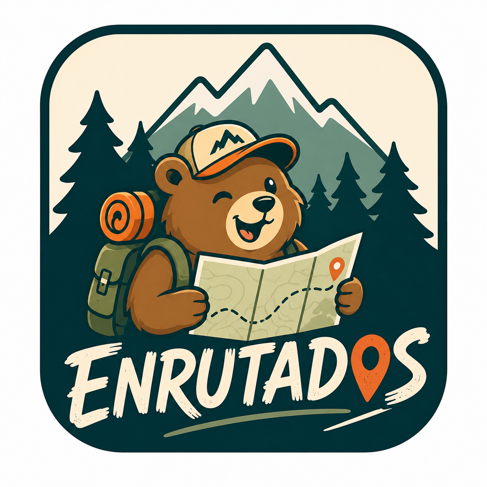

Ruta
Tiempo, peajes, curvas, pendientes y consumo. No solo “la más rápida”.

EnrutadosAntes de abrir Google Maps
Enrutados ordena las decisiones normales de un viaje para que no tengas que resolverlas una por una.
Un caso normal
No quieres solo una línea azul. Quieres saber qué opción te compensa de verdad.

Lo que resuelve
Tiempo, peajes, curvas, pendientes y consumo. No solo “la más rápida”.
Presupuesto, distancia, tipo de comida, terraza y requisitos del momento.
No pesa igual parar diez minutos que dejar el coche durante todo el día.
Lugares cercanos que encajan con el tiempo que realmente tienes.

Cómo funciona
Enrutados usa tus preferencias como punto de partida. Si hoy quieres gastar menos, caminar poco o evitar peajes, cambias solo eso.
Resultado real
En lugar de una lista interminable, ves alternativas concretas, ajustables y fáciles de comprobar.


Cuando necesitas varias cosas
El plan rápido junta decisiones ya explicadas y las adapta al tiempo disponible.
Abrir demo interactiva